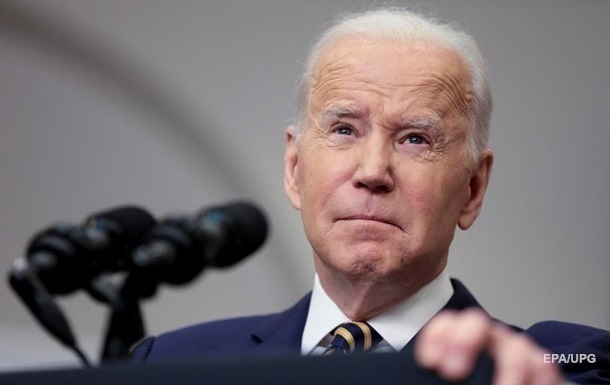

«Ніколи Трамп?» Виборців «ніколи не Байдена» може стати більше. Стеля підтримки Байдена зараз фактично нижча, ніж у Трампа. Це різкий розворот у порівнянні з 2020 роком — із серйозними наслідками.
Стеля підтримки Байдена зараз фактично нижча, ніж у Трампа. Це різкий розворот у порівнянні з 2020 роком — із серйозними наслідками.

Принаймні одному з постраждалих очевидці викликали швидку медичну допомогу.
У Харкові працівники ТЦК двічі за день побили чоловіків. Факт побиття цивільних зафіксували на відео очевидці. Інциденти прокоментували у поліції області та пресслужбі Харківського ОТЦК та СП.
Деякі демократи, які намагаються впоратися з незмінно приголомшливими результатами опитувань президента Байдена у 2024 році, поділяють віру: теорію стелі .
Усе, що Байдену потрібно зробити, це згуртувати союзників, які не ставляться до нього з ентузіазмом, особливо молодих, темношкірих та латиноамериканських виборців , проти Дональда Трампа . Зрештою, стеля колишнього президента виявилася низькою; він не набрав 47 відсотків ні на виборах 2016, ні на виборах 2020 року. І Байден показав, що може отримати більшість голосів виборців.
Теорія стелі, на яку спираються деякі демократи, має на увазі, що колишній президент Дональд Трамп має обмежену підтримку серед виборців, яка не перевищує певного рівня, так званої "стелі". Ця стеля обмежує його можливість набрати більше певної кількості голосів, що відкриває можливості для Джо Байдена, навіть за умови його невисоких рейтингів, перемогти на виборах 2024 року.
Щоб Джо Байден зміг перемогти на виборах 2024 року, його стратегія має зосереджуватися на згуртуванні союзників, які не завжди виявляють ентузіазм до його кандидатури, особливо молодих, темношкірих та латиноамериканських виборців. Ось як Байден може досягти цієї мети:
Згуртування молодих виборців
Проблеми, які хвилюють молодь:
Кліматичні зміни: Продовжувати підкреслювати свою прихильність до боротьби зі зміною клімату, підтримувати зелені ініціативи та відновлювані джерела енергії.
Освіта і студентські борги: Просувати ініціативи щодо зниження вартості освіти, списання студентських боргів і підтримки доступної вищої освіти.

Соціальні медіа та цифрові платформи:
Активне використання соціальних медіа для залучення молодих виборців, використовуючи платформи, які вони найчастіше відвідують, як TikTok, Instagram та Twitter.
Залучення популярних інфлюенсерів та молодіжних лідерів для поширення його меседжів.
Згуртування темношкірих виборців
Соціальна справедливість і расова рівність:
Підтримка реформ у сфері кримінального правосуддя, спрямованих на боротьбу з системним расизмом та надмірним покаранням.
Підтримка програм, які сприяють економічним можливостям для темношкірих громад, включаючи доступ до кредитів, розвиток малого бізнесу та підвищення рівня зайнятості.
Згуртування латиноамериканських виборців
Імміграційна політика:
Просування реформ, які сприяють захисту прав іммігрантів, включаючи програму DACA (Deferred Action for Childhood Arrivals).
Підтримка законодавства, що дозволяє іммігрантам, які проживають у США, отримати громадянство.
Економічні можливості та охорона здоров'я:
Зосередження на програмах, які підтримують економічне зростання та зайнятість у латиноамериканських громадах.
Забезпечення доступу до медичної допомоги, зокрема, через розширення програм, як Medicaid, та підтримку ініціатив з покращення охорони здоров'я.
Стратегія антимобілізації проти Трампа
Висвітлення небезпеки повернення Трампа:
Наголос на можливих негативних наслідках повернення Трампа до влади, зокрема, для демократії, економіки та міжнародної репутації США.
Підкреслення контрастів між політиками Байдена і Трампа, зокрема в питаннях прав людини, соціальної справедливості та міжнародної політики.
Об'єднання проти спільного суперника:
Заклик до єдності серед різних груп виборців для запобігання поверненню Трампа.
Використання риторики про захист демократичних цінностей та стабільності.